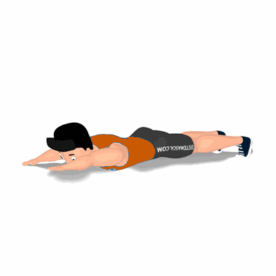

Super Homem

Exercício para fortalecimento dos músculos lombares, em específico, o quadrado do lombo.
Ficha Técnica
Tipo: Musculação
Grupo Muscular: Costas
Aparelho: Nenhum
Músculos: Nenhum
Como realizar
- Deite de barriga para baixo com as costas viradas para cima sobre um colchonete;
- Pernas e braços estendidos, formando uma linha com o corpo inteiro;
- Elevar ao mesmo tempo os braços e pernas, permanecendo apenas a barriga no solo;
- Manter o pescoço alinhado com o corpo;
- De forma controlada, retorne à posição inicial;
- Repita os movimentos, conforme o número de repetições orientado pelo professor.
 RC STORE
RC STORE